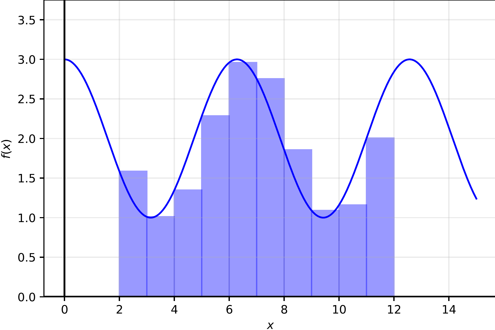
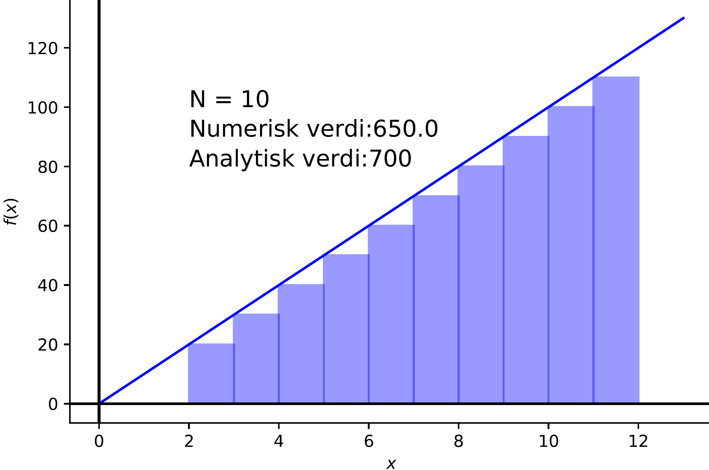
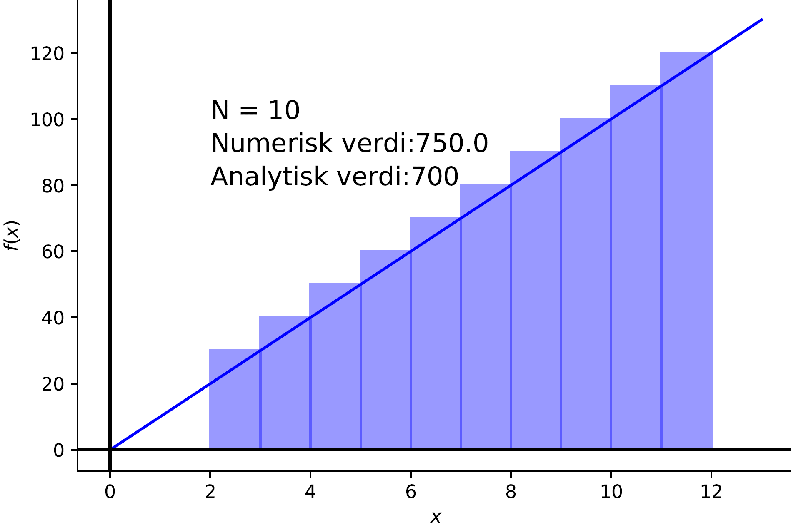
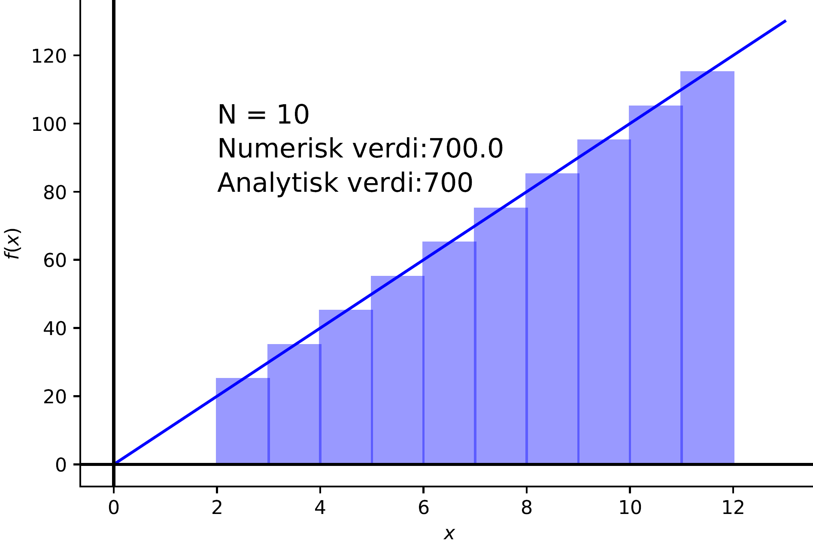
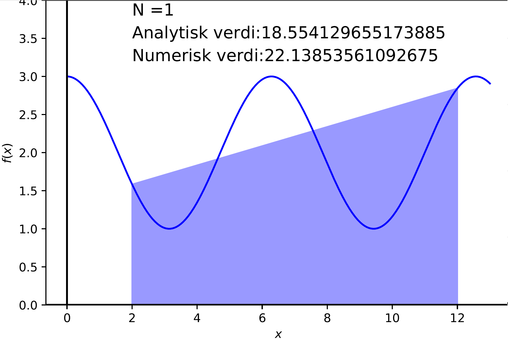

Numerical integration#
Learning outcomes
After working through this chapter, you should be able to:
explain how a definite integral can be approximated as a sum of small areas
implement and explain the difference between left, right and midpoint approximations
explain and implement the trapezoidal method
compare numerical methods using error and convergence
integrate functions and experimental data with SciPy
interpret integrals in a chemical context
Integration#
You may know integration both as a method for finding the area under a graph and as the inverse operation of differentiation. In this chapter, we are mainly concerned with definite integrals, that is, integrals between two limits \(a\) and \(b\).
A computer works with finite numbers and discrete points. We therefore do not ask it to “find an antiderivative” in the same way as we do symbolically. Instead, we approximate the area under the graph by dividing it into many small pieces.
Integrals in chemistry#
Numerical integration appears in many areas of chemistry, for example when we calculate
the area under a chromatographic peak
the area under an NMR signal
accumulated heat or electrical charge over time
integrals that occur in numerical solutions of differential equations
A major advantage of numerical integration is that we can also integrate experimental data, for which we do not necessarily have an analytical function.
The rectangle method: from integral to Riemann sum#
A definite integral can be understood as the limit of a Riemann sum: we divide the area under the graph into narrow strips and approximate each strip with a simple geometrical shape. The simplest shape is a rectangle.
{kind=link}

Here, the interval is divided into 10 rectangles. If the interval is \([a,b]\) and we use \(n\) rectangles, their width is
In the figure, the height is determined by the function value at the left edge of each rectangle. This gives the left approximation.
If we increase the number of rectangles, they follow the graph more closely:

This is the basic idea behind numerical integration: more, narrower geometrical shapes usually give a better approximation.
Left approximation#
We begin with the code without making a function. This makes the algorithm easier to understand:
import numpy as np
import matplotlib.pyplot as plt
def f(x):
return np.cos(x) + 2
a = 2
b = 12
n = 10
h = (b - a) / n
area = 0.0
x = a
for k in range(n):
area = area + f(x) * h
x = x + h
print("Numerical area:", area)
The loop does exactly what the figure shows: calculate the area of one rectangle, add it to the total, move \(x\) one rectangle width, and repeat.
Once the algorithm is clear, we wrap it in a function:
def rectangle_left(f, a, b, n):
h = (b - a) / n
area = 0.0
x = a
for k in range(n):
area = area + f(x) * h
x = x + h
return area
Where should we measure the height?#
The left edge is only one possible choice. For an increasing function, the left approximation will systematically lie below the graph:
{kind=link}

If we instead measure the height at the right edge, we obtain a corresponding overestimate:
{kind=link}

This is an important point: there are several ways to approximate the same area. The right approximation requires only one small change to the algorithm – we start at \(a+h\) instead of \(a\).
def rectangle_right(f, a, b, n):
h = (b - a) / n
area = 0.0
x = a + h
for k in range(n):
area = area + f(x) * h
x = x + h
return area
Midpoint approximation#
When the left edge gives too little area and the right edge gives too much, it is natural to ask whether we can choose a point between them. We then use the function value at the midpoint of each subinterval:
{kind=link}

For a linear function, the error areas above and below the graph cancel exactly, so the midpoint approximation is exact. For many curved functions, it is also considerably better than the left and right approximations.
def rectangle_midpoint(f, a, b, n):
h = (b - a) / n
area = 0.0
x = a + h/2
for k in range(n):
area = area + f(x) * h
x = x + h
return area
exact = (np.sin(12) + 2*12) - (np.sin(2) + 2*2)
print("Left:", rectangle_left(f, 2, 12, 10))
print("Right:", rectangle_right(f, 2, 12, 10))
print("Midpoint:", rectangle_midpoint(f, 2, 12, 10))
print("Exact:", exact)
Try it yourself#
Complete the rectangle methods and investigate how the result changes when you increase the number of rectangles.
Convergence#
A numerical answer should not be assessed from a single choice of \(n\). We can increase the number of intervals and investigate whether the result stabilises.
n_values = [10, 20, 50, 100, 200, 500, 1000]
print(" n left error midpoint error")
for n in n_values:
error_left = abs(rectangle_left(f, a, b, n) - exact)
error_mid = abs(rectangle_midpoint(f, a, b, n) - exact)
print(f"{n:4d} {error_left:12.6f} {error_mid:14.6f}")
The trapezoidal method#
The rectangle methods assume that the top of each small shape is horizontal. In other words, we replace the function locally with a constant value. This works, but if the function changes noticeably through the interval, we are throwing away information.
A natural improvement is to draw a straight line between the two endpoints. This gives a trapezoid instead of a rectangle:
{kind=link}

For one subinterval of width \(h\), the two parallel sides are \(f(x_i)\) and \(f(x_{i+1})\). The area is therefore
For the complete interval, we add one such trapezoid for each subinterval. We can write this as
Again, we first implement the algorithm directly:
def f(x):
return x**3
a = 0
b = 5
n = 100
h = (b - a) / n
area = 0.0
x = a
for k in range(n):
area = area + (f(x) + f(x + h))/2 * h
x = x + h
print("Trapezoidal:", area)
We can then wrap exactly the same loop in a function:
def trapezoidal_method(f, a, b, n):
h = (b - a) / n
area = 0.0
x = a
for k in range(n):
area = area + (f(x) + f(x + h))/2 * h
x = x + h
return area
print("Trapezoidal:", trapezoidal_method(f, 0, 5, 100))
print("Exact:", 156.25)
As the number of trapezoids increases, the straight line segments follow the graph more closely:

Simpson’s method#
We can view the rectangle and trapezoidal methods as a small progression:
rectangle: the function is approximated locally by a constant
trapezoid: the function is approximated locally by a straight line
The next step is to use a curved top. Simpson’s method uses quadratic polynomials over pairs of subintervals, and is often very accurate for smooth functions.
For an even number \(n\), the method can be written
The code is a little less intuitive than the rectangle and trapezoidal methods, so the main goal is to recognise the structure of the formula.
def simpsons_method(f, a, b, n):
if n % 2 != 0:
print("n must be even.")
return None
h = (b - a) / n
area = f(a) + f(b)
x = a + h
for k in range(1, n):
if k % 2 == 0:
area = area + 2*f(x)
else:
area = area + 4*f(x)
x = x + h
return area * h/3
print("Simpson:", simpsons_method(f, 0, 5, 100))
The rectangle methods, the trapezoidal method and Simpson’s method belong to the same family of integration methods, Newton–Cotes methods. We do not need to learn the whole family; the important idea is to see how better approximations can be constructed by using more information about the shape of the function.
Using numerical libraries#
Once we understand the principle, we can use ready-made functions. In modern SciPy, the relevant functions include:
integrate.trapezoid(y, x)for discrete dataintegrate.simpson(y, x=x)for discrete dataintegrate.quad(f, a, b)for a function
trapezoid and simpson are the current names; older code may contain the deprecated names trapz and simps.
from scipy import integrate
import numpy as np
x = np.linspace(0, 5, 1001)
y = f(x)
trapezoidal = integrate.trapezoid(y, x)
simpson = integrate.simpson(y, x=x)
quad_value, quad_error = integrate.quad(f, 0, 5)
print("trapezoid:", trapezoidal)
print("simpson:", simpson)
print("quad:", quad_value)
print("estimated absolute error from quad:", quad_error)
Chemical example: area under a chromatogram#
A chromatogram consists of signal as a function of retention time. The area under a peak can be proportional to the amount of substance or concentration after an appropriate calibration.
Here we create a simple synthetic chromatogram with two peaks and integrate the signal numerically. The point is that we are now integrating measurement points, not a symbolic function.
import matplotlib.pyplot as plt
time = np.linspace(0, 10, 501)
peak_1 = 1.2*np.exp(-0.5*((time - 3.0)/0.35)**2)
peak_2 = 0.8*np.exp(-0.5*((time - 6.5)/0.50)**2)
signal = peak_1 + peak_2
plt.plot(time, signal)
plt.xlabel("Retention time (min)")
plt.ylabel("Signal (a.u.)")
plt.show()
mask_1 = (time >= 2.0) & (time <= 4.2)
mask_2 = (time >= 5.0) & (time <= 8.0)
area_1 = integrate.trapezoid(signal[mask_1], time[mask_1])
area_2 = integrate.trapezoid(signal[mask_2], time[mask_2])
print(f"Area peak 1: {area_1:.3f} a.u.·min")
print(f"Area peak 2: {area_2:.3f} a.u.·min")
print(f"Area ratio peak 1 / peak 2: {area_1/area_2:.3f}")
Interpreting units
An integral has the unit of \(y\) multiplied by the unit of \(x\). If the signal is measured in mAU and time in minutes, the peak area is measured in mAU·min. A calibration model can then relate the area to concentration or amount of substance.
Further exploration: multiple integration#
In some areas of chemistry, especially quantum chemistry and statistical thermodynamics, we encounter integrals over several variables. SciPy also provides functions such as dblquad and tplquad. It is useful to know that these exist, although they are not a main learning goal of this chapter.
def g(y, x):
return x*np.sin(y) - y*np.exp(x)
double_integral, error = integrate.dblquad(g, -1, 1, 0, np.pi/2)
print("Double integral:", double_integral)
Short summary#
Numerical integration sums small contributions over an interval.
Rectangle, trapezoidal and Simpson’s methods use different approximations between points.
A numerical result should be checked by changing the step size or the number of intervals.
For experimental data,
trapezoidandsimpsonare particularly useful.The unit and chemical meaning of the integral must always be interpreted together with the data.
Exercises#
Exercise 1 – rectangle methods
Integrate \(f(x)=x^2-2x+4\) from 2 to 8 using the left, right and midpoint approximations. First use \(n=10\) and then \(n=100\). Compare with the analytical value.
Exercise 2 – convergence
Make a plot of absolute error as a function of \(n\) for the left approximation, midpoint approximation and trapezoidal method. Use logarithmic axes.
Exercise 3 – chromatographic peak
Create a Gaussian-shaped peak centred at 5.0 min and add weak random noise. Integrate the peak with the trapezoidal method. How does the area change if you move the integration limits?
Exercise 4 – NMR
Two NMR signals have numerical areas 3.02 and 1.01. What might the area ratio suggest about the relative numbers of hydrogen atoms if the responses can be compared directly?
Exercise 5 – heat from power data
A calorimeter records heat power \(P(t)\) in watts every second. Explain why the integral \(\int P(t)\,dt\) gives energy, and write code that integrates a synthetic dataset. What unit does the answer have?
Exercise 6 – choosing a method
When would you use quad, and when would you use trapezoid? Give one chemical example of each.
Exercise 7 – Simpson
Implement Simpson’s method yourself. Compare with scipy.integrate.simpson for \(f(x)=\cos x + 2\) over the interval \([2,12]\).
Exercise 8 – a difficult function
Study \(f(x)=\sin(1/x)\) close to \(x=0\). Plot the function and investigate how different integration limits and resolutions affect the result. Explain why this is a numerically challenging problem.